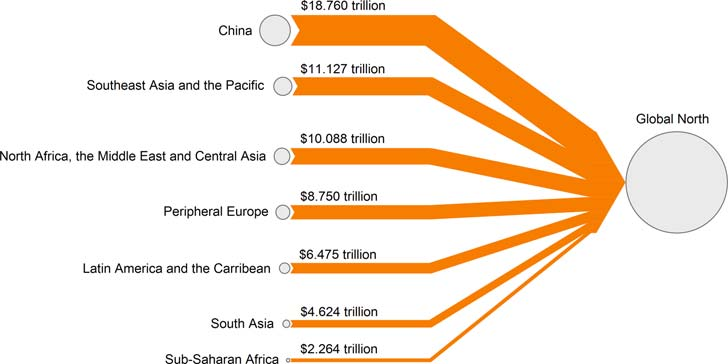

13 Laws of Capitalism
Capitalism is a legal order, not a statistical regularity.
13.1 On Piketty
Grewal Memo
The response to the crisis in Europe has suggested that Brussels now operates as an arm of finance capital and that monetary union is more likely to prove the undertaker of European social democracy than its savior.
Piketty’s most recent volume, published in French in 2013, and in English in 2014 as Capital in the Twenty-First Century — a knowing nod to Karl Marx — is a sprawling, ambitious text that builds on this earlier work while rendering it accessible to a wider audience. Its argument, backed by impressive empirical data, may be summed up in three words: capitalism generates inequality.
Capital in the Twenty-First Century has thus prompted discussion of inequality, financial regulation, and political economy across an unusually wide spectrum, and for this alone the work deserves the praise it has received.
Piketty’s major claim — that capitalist societies exhibit a persistent trend of increasing inequality — should come as a prompt to examine the underlying legal and institutional foundations of capitalist economic relations.
Capital in the Twenty-First Century is a study of modern inequality — of differences in income and wealth among people of equal juridical status.
Reassessment of Kuznets - no ‘self-correcting market’
Kuznets won a Nobel Prize in 1971 for his study of U.S. economic growth and national income between 1913 and 1948. His study arguably revealed a trend in capitalism toward initially increasing but later decreasing inequality — the inverted U-shaped relationship now dubbed the “Kuznets Curve” (pp. 13–15). Piketty sees his own re- search as broadening “the spatial and temporal limits of Kuznets’s in- novative and pioneering work” (p. 16). 19 Bringing in more countries and a longer time horizon — strictly speaking three centuries, though adequate data are generally available only for the twentieth — leads Piketty to revise Kuznets’s argument. Kuznets was charting a historical anomaly.
The attraction of the “Kuznets Curve” is its suggestion, at least in its popularized version, that further economic growth will au- tomatically correct the problems that growth itself brings — and with- out having to elaborate the causal mechanisms that bring about such self-correction.
Kuznets was appropriately circumspect about the limits of his model and the generality of his conclusions. Others have subsequently argued, however, that the same inverted U-shaped relation- ship suggesting a “self-correcting market mechanism” obtains in many other areas: environmental degradation, health outcomes, and edu- cational opportunities.
Piketty’s comprehensive reassessment of Kuznets’s data has unset- tled the confidence that the market will “self-correct” in terms of ine- quality and highlighted instead the exceptional nature of the postwar period.
Piketty’s empirical analyses confirm in the register of the statistical a reality we already intuit.
This empirical ratification flatly contradicts earlier narratives concerning the relationship between capitalism, equality, and democracy that have long been taken for granted by the many people of North America and Europe who got ahead in the postwar period but whose children and grandchildren look increasingly unlikely to be able to do the same
A few hundred individuals now possess fortunes so vast that their wealth represents not so much private luxury as public power. They can buy media corporations 30 and private military contractors; they can sway individual elections and determine electoral trends. When they de- cide to engage in philanthropy, they can direct expenditures on a scale that rivals the capacity of almost any national government or interna- tional organization, and thus reorient humanitarian, cultural, and sci- entific agendas to their personal priorities. They can coopt state functions to preserve or extend their wealth through privatizations, special bailouts, and preferential treatment of various kinds, which so- cializes risk while privatizing profit.
Why, then, has r > g held generally? Piketty has painstakingly established that it has, and he has some suggestions as to how it undergirds the more visible inequalities of income and wealth. As for its ultimate causes, however, we must treat Piketty’s book as a catalyst for further research on the legal, social, political, and economic dimensions of inequality under capitalism.
What the critics of the neoclassical position were suggesting was not simply that it is incoherent to attempt to value capital without positing an exogenous rate of return, but also that “capital” does not really exist in any determinate fashion. Rather, what exists is legally structured access to the variety of resources that people use to produce things, and the market value of this access cannot be determined without examining its distribution — which is necessarily given by politics and social conditions rather than by a purely technical process.
While critics have argued that Piketty missed this point, owing to his use of standard neoclassical formula- tions, 67 it may nevertheless be possible to interpret his conclusions sympathetically. What he has estimated is not a physical stock of stuff so much as the market valuation of the extent of capitalist privilege, ramified across a range of assets from houses to machines to software programs, which he recognizes has varied across historical periods as a result of changing economic policy.
Perhaps his analysis can thus be said to be Sraffian in spite of itself: we may note the inco- herence of trying to assume an aggregate rate of return on capital even while recognizing that the deepest import of Piketty’s work will be to bring renewed attention to the view that distribution is a social and political issue.
CAPITALISM AS A LEGAL ORDERING
Understanding why r > g has generally held — and why it briefly did not — requires an account of capitalism as a socioeconomic system struc- tured through law. Capitalism is fundamentally a legal ordering: the bargains at the heart of capitalism are products of law.
While these legal foundations go mostly unexamined in Capital in the Twenty-First Cen- tury, the book should prompt further study of the actual laws of capi- talism — those behind the statistical regularities discussed as “laws” — that is, of the various legal and institutional arrangements governing capitalist economic systems.
Before the term “capitalism” became widespread in the late nineteenth century, the regime in which most people secure material needs through market exchange was simply called “commercial society.” The legal underpinnings of commercial society were of central concern to its early observers — students of classical political economy. From Smith’s Lectures on Jurisprudence in the early 1760s through the French économistes’ analyses of agrarian production and property law to Marx’s study of labor regulations, the ambition was not to study markets in the abstract, but to uncover the legal foundations of commercial society. In this pursuit, these economists were not merely observers but advocates of reform of one kind or another. To use a limited (and anachronistic) vocabulary, their concerns were inextricably “normative” and “positive” — in part for the general reason that there is never a clean analytic separation between these orientations, but also because the “economy,” which was the object of their study, was in the process of active construction.
In that construction, the two markets of overwhelming concern to the early theorist-advocates were those in grain and labor. Reforming them required eliminating price controls and supply requirements on grain — which constituted what has been called the “moral economy” in food, whereby the state or local community accepted ultimate re- sponsibility for its provision — and abolishing guild restrictions on entry into trades, as well as feudal dues and related obligations in the countryside. It was believed that the labor and grain markets were linked, such that a reorientation in one required, and pushed along re- ciprocally, a corresponding reorientation in the other. The result of this deregulated 75 grain-labor market would be, according to its advo- cates, progress for the poor, productivity in agriculture, the enhance- ment of the power and wealth of the state (owing to a larger tax base), and the dissolution of vestigial feudal relations through the commer- cialization of labor relations and the free rental or sale of farmland.
The focus of free market advocacy
At the heart of this argument was the claim that higher grain prices would lead to more abundant food and higher wages, ultimately help- ing the poor. Defenders of the moral economy resisted this conclusion, either on the ground that this claim, like many others in the discourse of political economy, was paradoxical, or else by arguing that higher grain prices might indeed stimulate agricultural production but that the increased long-run provision of food would do nothing to alleviate the short-term dearth that was the target of government regulation. Reforming markets in grain and labor required reconceptualizing property and contract law, in addition to developing new state regulations and public infrastructures.
The consequence of these policies was the creation of the modern industrial economy, in which urban workers sell their labor in competitive markets for wages and then use this money to purchase foodstuffs produced by a much smaller number of farmers. The grad- ual generalization of such wage work in the eighteenth and nineteenth centuries made European states (and subsequently their colonies) into “capitalist” societies, in which markets and the division of labor are central to the distribution of essential goods and services, in contrast to earlier societies in which markets played a less central role in the pro- duction and distribution of basic resources.
This “freeing” of the grain and labor markets was not a simple hy- draulic process (though it was often depicted as such) in which the dead weight of state regulation was removed, allowing a wellspring of commercial sociability to bubble up. Rather, this new market regime was understood from its inception to be a positive legal construction. It required the creation of a new legal order, the drafting of the laws of capitalism. At the foundation of these laws was a new conception of juridical equality based on freedom of contract and private property in which no formal distinctions among parties would be recognized.
Corresponding to this equality before law was the delegation of pro- ductive activity to private agents linked through markets — that is, to agents understood to be acting in their “private” capacity.
The regime was given public legitimation through new constitutional orders that ratified formal equality among persons and gave special protec- tions to the rights of contract and property.
Constitution of Capitalism
In France and the United States — and then elsewhere — these new constitutional orders solved the puzzle of creating a political whole out of the legally equal, discrete individuals of commercial soci- ety by establishing revolutionary frameworks predicated on the dis- tinction between “sovereignty” and “government.” In practice, this ordering provides for the periodic reaffirmation of the sovereignty of the people in the form of direct ratification of fundamental legislation, either at the moment of constitutional inauguration or through ongoing processes of constitutional amendment, but through a variety of countermajoritarian mechanisms, it places limits on the ability of the people to radically revise the legal rules underlying commercial socie- ty. The result is what we might call the “constitution of capitalism,” understood in a double sense as the constitutional order that most cap- italist societies have adopted historically and the legal foundation of the social processes that constitute the economic system of capitalism.
Streeck
A detailed study of these legal foundations is essential to understanding the institutional structure of capitalism. Here the insights of institutional political economy and law and economics may be usefully adapted to the task. As Professor Wolfgang Streeck has recently argued, the institutionalist turn in social science has produced general insights that can, with a few “parametric specifications,” be put to use in the study of capitalism as a “specific type of social order,” under- girded by distinct legal arrangements. Supplementing Marx’s insights about the organization of wage-labor, Streeck suggests a variety of other empirical features characterizing capitalism. These include the presumed legitimacy of pursuing gain through private contract without, for the most part, being constrained by traditionalist “supernorms,” expectations of social solidarity, restraints on competition, or elite duties to ensure “system survival”; the expectation that rule followers are “rational-egoistic” in their orientation rather than norm internalizers with respect to the purpose of a rule (as with, for exam- ple, financial regulations); and a “differential endowment of classes with resources,” which results in classes having different capacities for effective agency, including disparate ability to mobilize political coalitions to advance their interests.
The mid-twentieth-century reversal of r > g emerged from deep changes in the regulation of the market.
Understanding the movement from patrimonial capitalism to the postwar “mixed economy” and back requires a nuanced account of what John Commons long ago called the “legal foundations of capital- ism,” and which legal realists from Robert Hale to Karl Llewellyn to Jerome Frank put at the center of their analyses. The return to Hale-style legal realism in the analysis of public institutions and “pri- vate” law may help stimulate a “law and economics” approach to the study of capitalism, rather than an approach in which markets are considered abstractly. Subjects that would be particularly im- portant to study include the causes and consequences of the post- feudal reconstitution of property law, and the ways in which labor, public benefits, and corporate law together structure the modern labor market as an arena of “contested exchange” in which “economic pow- er” is structured through various contractual mechanisms. These and related inquiries would help us understand the conditions under which formal equality of contract is compatible with widening eco- nomic inequality. We must also consider the way that law structures not just the particular bargains in capitalism (most prominently, the wage bargain), but also the broader social and political setting of the market. Here the dynamics of public and private debt, the regula- tion of finance in an age of “financialization,” the constraints placed on democratic control of the economy by international integration, and the problem of “commodification” understood as the regulation of “contested commodities” and “blocked exchanges” may prove espe- cially salient.
In studying these issues, Piketty’s work should lead us to consider how the legal foundations of capitalism influence the rate of return on capital and its consistent outpacing of overall growth.
The ways different areas of the law interact to affect the inequality r > g may be considerably complex.
While Piketty’s numbers invite a welcome debate on inequality, they do not, of course, tell us how to regard that inequality, let alone how to remedy it.
Piketty’s empirical assessments need to be situated within a broader structural account of the dynamics of capitalism, as I suggest above in describing capitalism as a legal order- ing.
Andrew Glyn and Wolfgang Streeck
Combining Glyn and Streeck with Piketty helps us to identify where the fault lines of future political contests will lie: in broad fights over debt, taxation, and public spending as the fiftieth through nineti- eth percentiles in the income and wealth tables lose ground to the top 10%, and in more specific conflicts as professionals and small busi- nesspeople in the top 10% lose ground to the 1% and yet smaller frac- tions. They also suggest that these problems ultimately emerge from differential power — the ability of some groups rather than others to control the state.
Piketty’s proposal for a global wealth tax assumes a co- ordinated, top-down, data-driven, and retrospective response to the in- equalities that capitalism generates — and in this he globalizes the fa- miliar presumption of many economists that taxation ex post is a better way to address inequality than ex ante changes to the legal rules governing the economy.
Piketty’s proposal for a global wealth tax assumes a co- ordinated, top-down, data-driven, and retrospective response to the in- equalities that capitalism generates — and in this he globalizes the fa- miliar presumption of many economists that taxation ex post is a better way to address inequality than ex ante changes to the legal rules governing the economy.
On that view, it is more efficient to allow the unencumbered market to generate wealth — which can later be redistributed — than to attempt to alter the organization of the market in the first place. But the question as to whether ex ante or ex post mechanisms are more efficient assumes that both are politically feasi- ble — and it may be naïve to assume that after letting the inequality- producing market run its course there will be any agent left at the end of the process capable of demanding redistribution.
Indeed, on a more path-dependent conception of political action, it may be only through structural changes to the economy — which galvanize political coali- tions while resurrecting distributive questions — that an electorate be- comes capable of demanding higher tax rates. It was mass political empowerment at the height of the labor movement, drawing on post- war solidarity, that achieved the high marginal tax rates of the mid- century as part of a broader redesign of the terms of economic cooper- ation. If Piketty’s proposal for a global capital tax is, in his own words, “utopian” (p. 515), it is because it presumes a political agent ca- pable of enacting it, which is neither present now nor likely to be gen- erated by the trends he identifies.
If contemporary capitalism increasingly resembles the period before the exceptional times began, we should perhaps draw on the correspond- ing array of political strategies: general strikes and labor activism, ex- periments with new forms of cooperative industrial organization, and radical political and social movements.
What has occurred since the 1970s, to varying degrees, is a shift of approximately 5% of nation- al wealth from the fiftieth through ninetieth percentiles up into the top decile, much of it into the top percentile.
The failure of the financial crisis of 2008 to produce any lasting movement for fundamental economic reform may seem to confirm Professor Perry Anderson’s pessimistic assessment over a decade ago that “[t]he only starting-point for a realistic Left today is a lucid regis- tration of historical defeat.
To this pessimism of the intellect, however, we should muster an optimism of the will. More than Lenin or Bernstein, Capital in the Twenty-First Century brings Antonio Gramsci to mind. Whatever the limits of his particular proposals, Piketty has fired a forceful shot in what Gramsci described as the “war of position,” the slow but vital work of consciousness-raising that must precede the “war of manoeuvre,” 144 or “movement,” 145 during which distributional claims are asserted directly in political contests.
The history of capitalism in the twenty-first century remains to be written — and politics, rather than the natural operation of the market, will finish the story.
As Piketty concludes: “If democracy is someday to regain control of capitalism, it must start by recognizing that the concrete institutions in which democracy and capitalism are embodied need to be reinvented again and again”
13.2 The Value of Law:: The Judiciary and the State
Anton and Don join Mike Macnair for a discussion on law in history and in Marxist thought. They discuss the purpose of law, the different schools of philosophy of law, how Hegel conceived law and the state, and what Marx and Engels took from it, the legal theories of the Soviet theoretician Pashukanis, the role of the constitution in a bourgeois state, what is the role of judges in capitalism and how to organize law in a socialist society.
Podcast with Macnair (Cosmonaut Magazin 2021 )(https://cosmonautmag.com/2021/10/the-value-of-law-the-judiciary-and-the-state-with-mike-macnair/) (pdf)
13.3 Unequal Exchange
Hickel
This paper quantifies drain from the global South through unequal exchange since 1960. According to our primary method, which relies on exchange-rate differentials, we find that in the most recent year of data the global North (‘advanced economies’) appropriated from the South commodities worth $2.2 trillion in Northern prices — enough to end extreme poverty 15 times over. Over the whole period, drain from the South totalled $62 trillion (constant 2011 dollars), or $152 trillion when accounting for lost growth. Appropriation through unequal exchange represents up to 7% of Northern GDP and 9% of Southern GDP. We also test several alternative methods, for comparison: we quantify unequal exchange in terms of wage differentials instead of exchange-rate differentials, and report drain in global average prices as well as Northern prices. Regardless of the method, we find that the intensity of exploitation and the scale of unequal exchange increased significantly during the structural adjustment period of the 1980s and 1990s. This study affirms that drain from the South remains a significant feature of the world economy in the post-colonial era; rich countries continue to rely on imperial forms of appropriation to sustain their high levels of income and consumption.
The dominant assumption in the field of international development holds that the economic performance of nations is due primarily to their internal, domestic conditions. High-income countries have achieved economic success because of good governance, strong institutions and free markets. Lower-income countries have failed to develop because they lack these things, or because they suffer from corruption, red tape and inefficiency. Therefore, development interventions should focus primarily on fixing domestic policy in global South countries, with the assistance of aid from donor governments. This view has long come under criticism. Methodological nationalism – analysing each country in isolation – erases the longstanding inequitable relationships between countries that have defined the global economy for the last 500 years.
When we take this history into account, it becomes evident that the wealth of high-income nations depends on processes of appropriation from the rest of the world. This was clear during the colonial period, but it also remains true today.
Our results affirm that drain from the global South remains a significant feature of the world-economy in the post-colonial era. ‘Advanced economies’ rely on unequal exchange to facilitate their economic growth and to sustain high levels of income and material consumption. In recent years, the drain has amounted to around $2.2 trillion per year (constant 2011 dollars) in Northern prices, or $1.3 trillion per year in global average prices, when calculated according to exchange-rate differentials. The intensity of exploitation and the scale of unequal exchange increased significantly during the structural adjustment period of the 1980s and 1990s. These patterns of appropriation through North–South trade are a major driver of global inequality and uneven development.
There is little evidence to suggest that the North does in fact have a productivity advantage over the South when it comes to production for international trade. Most Southern export industries use advanced technologies provided by foreign capital. At least 75% of the South’s exports in 1966 were produced in ‘the ultra-modern capitalist sector (oil, mining and primary processing of minerals, modern plantations – like those of United Fruit in Central America, or of Unilever in Africa and Malaysia).’ Given the extent of offshoring since the 1980s, it is likely that the proportion has only increased.
Beyond considering the impact of technology and capital on productivity, we should also consider the impact of different modes of labour control. Workers in the South are subject to rigid Taylorist rules that would fall foul of labour law in the North. Chinese workers who produce smart phones describe being ‘trapped in a concentration camp of labor discipline’ where foreign corporations ‘sacrifice our dignity as people for production efficiency’. Prices are not determined by productivity, but by the monopoly power of Northern governments and multinational corporations.
One might argue that the higher wages of workers in the North reflect their greater productivity. Yet this assumption is belied by a 1971 study of export processing zones in Mexico, which found that Mexican metal workers, electronics workers and seamstresses produced 10%-40% more output in an hour than their US counterparts. Southern wages are lower than Northern wages despite the fact that Southern workers are more productive and efficient.
It is the ‘suppression of international labour mobility’ combined with ‘the destitution of a large part of the [South’s] working population’ which explains ‘why a haircut or a bus journey in Dhaka is so much cheaper than in Amsterdam,’ not ‘the allegedly so much lower productivity of workers in the tradeable goods sector.’
Measuring drain from the periphery is inherently difficult because it is, by definition, hidden in the price structure of the world-economy. Nevertheless, the South’s wages and real exchange rates indicate that Southern prices have been kept artificially low, which enables pat- terns of imperial appropriation that remain a dominant feature of the world economy.
History
The historical record demonstrates that, during the colonial period, Western European nations depended for their development on extraction from other parts of the world. Britain’s industrial revolution depended in large part on cotton, which was grown on land forcibly appropriated from Indigenous Americans, with labour appropriated from enslaved Africans. Other crucial inputs required by British manufacturers – hemp, timber, iron, grain – were produced using forced labour on serf estates in Russia and Eastern Europe. Meanwhile, British extraction from India and other colonies funded more than half the country’s domestic budget.
It is impossible to understand the industrialisation of high-income countries without reference to the patterns of extraction that underpinned it.
The general logic of colonisation was to integrate the global South into the Europe-centered world economy on unequal terms. The South (the ‘periphery’) was made to serve as a source of cheap labour and raw materials for the North (the ‘core’), and as a captive market for Northern manufactured goods.
Beginning in the 1950s, economists and historians associated with dependency theory and world-systems theory argued that this relationship continues to define the global economy in the post-colonial era.
Recent empirical data confirms that high-income nations continue to rely on a large net appropriation of labour and resources from the rest of the world. In 2015, this amounted to 10.1 billion tons of embodied raw material equivalents (accounting for 50% of total consumption in high-income nations), and 182 million person-years of embodied labour (28% of their total consumption) from low- and middle-income nations. Note that these figures represent resources and labour embodied not only in primary commodities but also in high-technology industrial goods such as iPhones, computer chips, cars, designer clothes, etc., which over the past few decades have come to be overwhelmingly produced in the South.
This net appropriation occurs because prices are systematically lower in the South than in the North. For instance, wages paid to workers in the South are on average one-fifth the level of Northern wages. This means that for every unit of embodied labour and resources the South imports from the North, they have to export many more units to pay for it. A process of ‘unequal exchange’, which constitutes a ‘hidden transfer of value’ from South to North.
Theorists of unequal exchange argue that global price inequalities are artefacts of historical and contemporary forces that depress the cost of labour and resources in the South. During the colonial period, dispossession and the destruction of subsistence economies created a surplus of unemployed labour.
Following independence, when Southern governments attempted to improve wages and resource prices, Western powers often intervened to remove them from power.
In the contemporary era, subsidised grain exports from the North, and land grabs by multinational companies, continue to undermine subsistence economies, placing downward pressure on wages.
Structural adjustment programmes (SAPs) imposed on the South by the IMF and World Bank have cut public sector wages and employment, while rolling back labour rights and curtailing unions.
Finally, the South’s dependence on external finance means that Southern govern- ments must compete with one another to offer cheaper wages and resources to attract foreign investment. Low wages are ultimately maintained through militarised borders, which preclude easy migration from South to North, and thus prevent international wage convergence.
Just as Southern prices are kept artificially low, Northern prices are kept artificially high. Northern firms control 97% of patents – a form of monopoly power that, bolstered by the TRIPS agreement under the WTO, enables them to extract returns well in excess of free market rates. Moreover, high-income nations exercise monopoly power within the core institutions of economic governance. In the World Bank and the IMF, the G8 hold a majority share of votes, allowing them to determine the rules of international finance. In the World Trade Organization, bargaining power is determined by market size, enabling high-income nations to set trade rules in their interests. Neoliberal policies imposed by these institutions have forced global South governments to remove tariffs, subsidies and other infant industry protections, preventing them from developing the industrial capacity to compete with the North. As a result, a relatively small number of firms from high-income countries have grown so large that they now control an overwhelming share of the world economy, ’with revenues that exceed the GDP of most sovereign countries. These firms can set final prices that are effectively insulated from competition, while depressing input costs across their supply chains.
The deployment of geopolitical and monopoly power by Northern states and corporations main- tains price differentials that enable them to appropriate labour and resources from the South through international trade.
Several attempts have been made to estimate the scale of the South’s losses through unequal exchange.
Samir Amin (1976, p. 144) calculated that ‘if the rewards of labor were equivalent to what they are at the center, with the same productivity,’ the South’s revenues from exports to the North would have been $152 billion higher in 1966 (updated to constant 2011 dollars). This method has been improved upon by Zak Cope (2019, p. 81), who devised a way to distinguish between losses the South suffers due to the ‘undervaluation’ of their exports (comparing the South’s wages to global average wages), and losses they suffer due to the ‘overvaluation’ of imports (comparing the North’s wages to global average wages). He finds that in 2010, the South lost $2.8 trillion in hidden value appropriated by the North.
n the late-1990s, a second method for quantifying unequal exchange was developed by Gernot Köhler (Köhler 1998; Köhler and Tausch 2002, p. 43–100). Instead of looking at wage differentials, Köhler uses the distortion factor between market exchange rates (MER) and purchasing power parity (PPP) as a proxy for calculating how much higher Southern export prices would be if valued in Northern prices. Using this approach, Köhler estimates that the South lost $134 billion in unequal exchange in 1965, a figure which rose to $2.586 trillion in 1995 (updated to constant 2011 dollars). Köhler (2003) also employed a simplified version of his formula (using arithmetic rather than weighted averages to estimate exchange rate distortion) to construct annual estimates of unequal exchange from 1960 to 1998. His data showed that the South lost $27.7 trillion (updated to constant 2011 dollars) over that period.
Exchange Rate Differentials (ERDI)
Köhler measures value transfer through unequal exchange by starting with the exchange rate disparities between Northern countries and Southern countries. For instance, Köhler notes that India’s GDP per capita in 1995 was US$1,400 in PPP terms (i.e. measured at the US price level), but only US$340 in MER. Dividing PPP by MER yields what Köhler calls the ‘Exchange Rate Deviation Index’, or ERDI. For India in 1995, ERDI was 4.12. Put differently, prices in the US were 4.12 times higher than in India. For Northern countries, by contrast, ERDI is generally very close to 1. Köhler proposes that we can use ERDI to measure value transfer. His formula is as follows:
\[T = d∗X –X\]
Where:
T = value transferred through unequal exchange
X = exports from periphery to core
d = the ratio of the peripheral country’s ERDI to the core country’s ERDI
There are two ways to conceptualise Köhler’s approach to value transfer. Some scholars have interpreted it as the amount of additional income that the South would have earned on its exports under conditions of fair-trade (Köhler 1998; Somel 2003). In other words, value transfer is calculated under the assumption that Southern exporters could receive Northern prices in a fairer world. One might criticise this approach on the grounds that it is impossible for all countries to achieve Northern prices, given that Northern prices are high because of imperial power, which cannot be universalised. But there is another, more robust way to conceptualise Köhler’s approach, namely, as measuring the value of commodities that the South transfers uncompensated to the North in terms of the Northern price level.
This represents commodities that the South could have sold on world markets, as well as labour and resource inputs that could have been used to meet domestic needs, but which were instead transferred gratis to the North. It also represents a significant windfall for the North, in terms of the money saved by acquiring goods from the South, on unequal terms, rather than producing them domestically at Northern prices. These savings are available for reinvestment in Northern econ- omic development and to enhance the North’s economic and geopolitical power, which further enables unequal exchange.

Figure: Price Distortion Factor (1960–2017).

Figure: Drain from the global South (1960–2017).
Our results affirm that drain from the global South remains a significant feature of the world- economy in the post-colonial era. ‘Advanced economies’ rely on unequal exchange to facilitate their economic growth and to sustain high levels of income and material consumption. In recent years, the drain has amounted to around $2.2 trillion per year (constant 2011 dollars) in Northern prices, or $1.3 trillion per year in global average prices, when calculated according to exchange- rate differentials. The intensity of exploitation and the scale of unequal exchange increased signifi- cantly during the structural adjustment period of the 1980s and 1990s. These patterns of appropria- tion through North–South trade are a major driver of global inequality and uneven development.
Hickel (2021) Plunder in the Post-Colonial Era (Paywall) Author’s pdf (pdf)
Gräbner
‘Unequal Exchange’ between the core and the periphery. This concept goes back to Prebisch (1950) and Singer (1950), who have identified an unequal exchange between primary goods produced in the peripheries and industrial goods produced in the cores. They found that this leads to a constant deterioration of the terms of trade for the peripheries with adverse consequences for industries in peripheries. Emmanuel (1972) picks this up and comes up with his own theory of unequal exchange in which he puts differences in wages at the heart of his explanation for the uneven development between cores and peripheries hindering the development in peripheries.
Dorninger
Highlights
• We provide empirical evidence that supports the theory of ecologically unequal exchange.
• High-income nations are net importers of embodied materials, energy, land, and labor. • High-income nations gain a monetary trade surplus via this resource appropriation.
• Lower-income nations provide resources but experience monetary trade deficits.
• The observed inequality is systemic and hampers global sustainability in multiple ways.
Abstract
Ecologically unequal exchange theory posits asymmetric net flows of biophysical resources from poorer to richer countries. To date, empirical evidence to support this theoretical notion as a systemic aspect of the global economy is largely lacking. Through environmentally-extended multi-regional input-output modelling, we provide empirical evidence for ecologically unequal exchange as a persistent feature of the global economy from 1990 to 2015. We identify the regions of origin and final consumption for four resource groups: materials, energy, land, and labor. By comparing the monetary exchange value of resources embodied in trade, we find significant international disparities in how resource provision is compensated. Value added per ton of raw material embodied in exports is 11 times higher in high-income countries than in those with the lowest income, and 28 times higher per unit of embodied labor. With the exception of embodied land for China and India, all other world regions serve as net exporters of all types of embodied resources to high-income countries across the 1990–2015 time period. On aggregate, ecologically unequal exchange allows high-income countries to simultaneously appropriate resources and to generate a monetary surplus through international trade. This has far-reaching implications for global sustainability and for the economic growth prospects of nations.
13.4 Core-Periphery
Gräbner
Trade in the Eurozone is unequal at the expense of the peripheries and follows a pattern of “unequal technological exchange”
Complex goods are manufactured and exported from the core, simple goods are manufactured and exported by the peripheries. We argue that this unequal technological exchange is the result of a ‘vicious specialization’ and is effectively hampering the development of the peripheries. It thereby adds to the dimensions of ’unequal exchange.
The present paper complements structuralist theory with methods and concepts from the literature on economic complexity.
At the core of the complexity literature is the idea that a key explanation for a society’s wealth is the ability of its citizens to collectively engage in sophisticated economic activities, such as the production of complex products. Analyzing inter- national trade data with tools from network science allows the delineation of indicators that measure the complexity of products (i.e. the amount of technological capabilities needed to produce the product) and of countries (i.e. the amount of collective capabilities accumulated in this society). The resulting formal apparatus allows for the empirical identification of core-periphery patterns in global production structures, as anticipated by earlier structuralist scholars.
The institutional shift that came along with the monetary integration can be understood as a shift in political power away from national democratic institutions and towards technical state apparatuses which made it in- creasingly difficult to challenge those asymmetric structures. The same can be said for the responses to the Euro crises, which was driven by the interest of core countries.
The European core has followed an export-driven growth model and the periphery has followed mainly a debt-driven growth model, which was rendered infeasible after the crisis.
Why some countries have seen the emergence of a debt-led rather than an export-led growth model to stabilize aggregate demand [is explained by] non-price competitiveness, which mainly depends on the accumulation of technological capabilities.
Three main challenges for country taxonomies as used in structuralism that are underlying these difficulties: first, the challenge of dynamics, which refers to the fact that countries might switch from one group to another over time. Ireland is an ex- ample that comes immediately to mind which switched from being a periphery, very depended on the UK, to a financial- ized country with considerable GDP growth throughout the 1990s (notwithstanding more recent problems of Irish GDP accounting). Second, the challenge of ambiguity, according to which countries might belong to the core in one sense, and the periphery in another sense. France, for instance, is a politically important player, yet features some typical economic characteristics of peripheries. Third, the challenge of granularity stresses that countries themselves might be divided into core and periphery. Within Spain, for example, the North plays the role of a core, the South the role of a periphery.
While there were (short) periods of convergence in Europe, the existence of core-periphery re- lations and a divergence of living standards has been the rule rather than the exception. This divergence has its reason not (only) in individual country characteristics, but also in the relationships between countries. The results of the analysis indicate that there are asymmetric trade structures regard- ing the technological complexity of traded goods between European Cores and peripheries. This unequal technolog- ical exchange, it was argued, is effectively hampering the development of the peripheries.